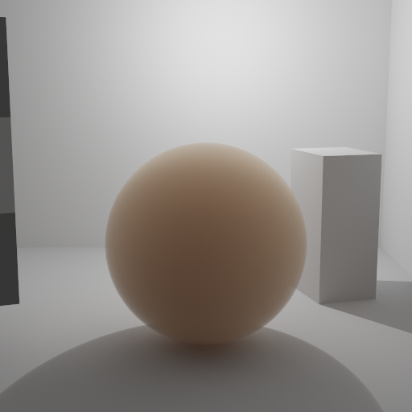
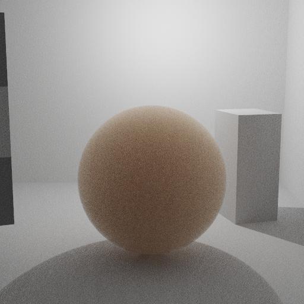
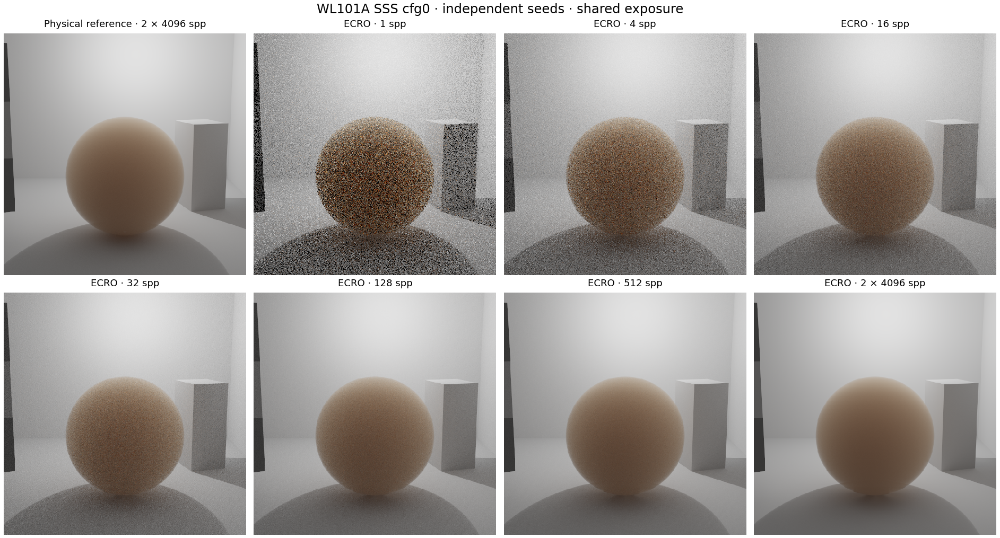
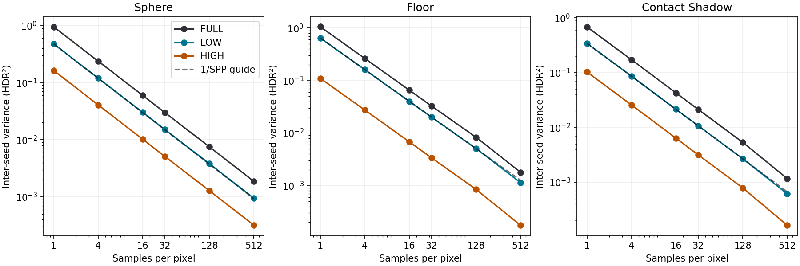
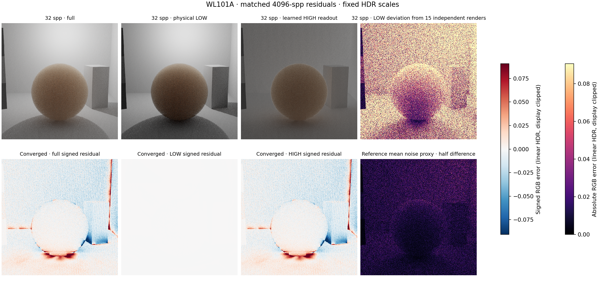

At 32 spp, stochastic sampling accounts for 98.85% of the MSE budget on both the sphere and floor. The frozen LOW-only dominance rule is inconclusive. The isolated LOW share is 49.90% on the sphere and 60.59% on the floor. The matched high-SPP residual lies in HIGH, especially around contact and boundaries.
Metrics · Run manifest · Reviewer file hashes · Worklog





LOW · HIGH · LOW stochastic deviation · Full paired residual · LOW paired residual · HIGH paired residual